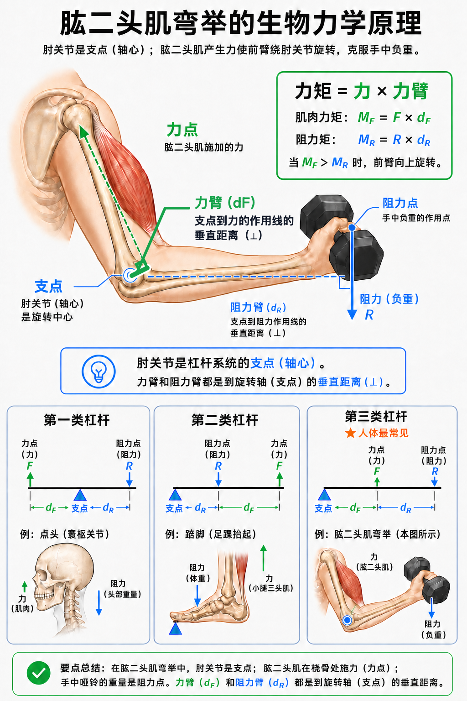

Day 16 · 杠杆系统与力矩
一句话总结
人体动作像一套会移动的撬棍: 关节是支点，肌肉拉力是力点，外部重量或身体重量是阻力点；动作难不难，关键看力矩，也就是力 × 力臂。同样 10 kg 哑铃，在不同角度、不同握距、不同站距下，关节要扛的旋转压力完全不同。

核心要点
-
杠杆三要素: 支点、力点、阻力点决定一根骨头绕关节怎么转。
先抓结论: 骨头像杠杆，关节像铰链，肌肉通过肌腱拉骨头，外部重量或身体重量负责“反着拉”。
底层机制要素 大白话 弯举例子 支点 旋转中心。 肘关节。 力点 肌肉把力施加到骨头的位置。 肱二头肌肌腱附着附近。 阻力点 重量或身体重心施加阻力的位置。 手里哑铃和前臂重量。 肌肉不会直接“推”骨头，大多数情况下是通过肌腱把骨头向一个方向拉。骨头被拉后绕关节转动，于是形成杠杆系统。
真实例子二头弯举时，肘关节固定为支点，肱二头肌收缩拉动桡骨附近，手里哑铃向下提供阻力。能不能弯起来，取决于肌肉力矩能否超过阻力力矩。
常见误解❌以为杠杆只存在于器械。✅其实每个关节动作几乎都能用杠杆看: 肩推、深蹲、提踵、颈部伸展都一样。
-
三类杠杆: 第一类支点在中间，第二类阻力在中间，第三类力点在中间。
底层机制类型 排列方式 人体例子 考试抓点 第一类 力点-支点-阻力点 颈部伸展，寰枕关节附近。 支点在中间，像跷跷板。 第二类 支点-阻力点-力点 提踵，脚趾为支点，体重在中间，小腿三头肌发力。 阻力在中间，力量优势明显。 第三类 支点-力点-阻力点 二头弯举、膝伸展、肩外展。 人体最常见，速度和幅度优势。 分类不看动作名字，看三点相对位置。把支点、力点、阻力点画出来，就能判断是哪类杠杆。
训练含义第二类杠杆省力，所以提踵能承受很大负荷；第三类杠杆费力但末端速度快、活动范围大，所以人体适合快速移动手脚。
常见误解❌以为人体第三类杠杆是“不合理设计”。✅其实它牺牲机械力量，换来速度、精细控制和大范围运动。
-
力矩: 力矩 = 力 × 力臂，表示某个力让关节旋转的效果。
力矩 = 力 × 力臂真实例子
字面意思
力矩衡量旋转能力。力越大，或力臂越长，越容易让物体绕支点转。
大白话
开门时推门把手比推门轴旁边轻松，因为到门轴距离更长，力臂更大。
为什么影响训练
哑铃没变重，但关节角度让力臂变长时，肌肉必须产生更大力矩，动作会突然变难。
侧平举最难通常在手臂接近水平时，因为哑铃重力线到肩关节的垂直距离最大。手臂垂在身体旁边时，同样重量对肩的外展阻力矩很小。
训练含义想判断某动作刺激哪个关节或肌肉，先看外力线，再看它到关节的垂直距离。这个距离比“看起来离得远”更重要。
常见误解❌以为力臂就是骨头长度。✅其实力臂是支点到力作用线的垂直距离，不等于整段骨头的长度。
-
人体第三类杠杆: 大部分人体动作力点在支点和阻力点之间，机械优势常小于 1。
先抓结论: 人体很多肌腱附着点离关节很近，肌肉要用很大力，才能移动远端相对较小的重量。
真实例子特点 代价 好处 力点靠近支点 肌肉需要更大力量。 远端移动速度快。 阻力点远离支点 阻力力矩容易变大。 手脚活动范围大。 机械优势小于 1 不省力。 适合运动、投掷、抓握、跑跳。 弯举 10 kg 哑铃时，肱二头肌实际张力远不止 10 kg 对应的重量，因为肌肉力臂很短，必须用更大肌肉力矩抵消哑铃和前臂的阻力矩。
训练含义不要用“外部重量轻”低估关节压力。小哑铃侧平举、直臂前平举、悬垂举腿，都可能因为长阻力臂而很难。
常见误解❌以为练得重才有大力矩。✅其实轻重量加长力臂也能让目标关节承受很大力矩。
-
机械优势: 机械优势 = 力臂 / 阻力臂，用来判断杠杆省力还是费力。
机械优势 = 力臂 ÷ 阻力臂底层机制
大于 1
力臂比阻力臂长，更省力。典型是很多第二类杠杆。
等于 1
两边力臂差不多，省力和速度优势都不明显。
小于 1
力臂短于阻力臂，更费力但末端速度快。人体第三类杠杆常见。
机械优势只描述杠杆结构，不直接等于训练效果。省力动作适合搬重，费力动作可能更适合速度、幅度或局部肌肉刺激。
真实例子提踵时脚趾附近是支点，体重在中间，小腿三头肌通过跟腱在后方发力，属于第二类杠杆，结构上更有力量优势。
常见误解❌以为机械优势越高训练越好。✅其实目标不同。想举起大重量需要优势，想让某肌肉承担更大挑战，有时反而利用较差机械优势。
-
角度改变力矩: 同一重量在不同关节角度下，阻力臂会变长或变短。
先抓结论: 自由重量动作常有“最难点”，因为重力方向固定向下，关节转动后，重力线到关节的垂直距离不断变化。
训练含义动作 常见最难点 原因 二头弯举 前臂接近水平附近。 哑铃重力线到肘关节距离最大。 侧平举 上臂接近水平附近。 哑铃到肩关节的阻力臂最大。 俯卧撑 底部到中段。 肩肘力矩大，同时胸肩三头要协同。 弹力带、绳索和机器可以改变阻力曲线，让某些角度更难或更轻。选器械时要问: 它把最大阻力放在哪个角度?
常见误解❌以为全程重量一样，所以全程难度一样。✅自由重量的重量没变，但阻力臂在变，所以关节力矩会变。
-
训练变量: 握距、站距、负重位置会改变力臂，进而改变动作难度和刺激部位。
真实例子
握距
卧推握距改变肩肘角度，也改变胸、前三角、肱三头的相对力矩需求。
站距
深蹲站距和脚尖方向会改变髋、膝、踝的力臂分配。
负重位置
前蹲、后蹲、壶铃杯式深蹲让重心位置不同，躯干和髋膝力矩也不同。
罗马尼亚硬拉把杠铃保持贴近身体，可缩短杠铃到腰椎和髋关节的水平距离。杠铃离身体越远，髋和腰背需要抵抗的外部力矩越大。
训练含义调整动作时别只说“舒服就行”。要看调整后哪条力臂变长、哪个关节力矩变大、目标肌是否更接近训练目的。
常见误解❌以为技术细节只是姿势好看。✅其实很多技术细节都在管理力臂，避免无效力矩或过高关节压力。
常见误区
❌很多人以为“重量轻就安全”。✅其实长力臂会把轻重量放大成很高的关节力矩，侧平举就是典型例子。
❌很多人以为力臂就是从关节到哑铃的骨头距离。✅其实力臂是到力作用线的垂直距离，必须看外力方向。
❌很多人以为人体杠杆费力是缺点。✅其实第三类杠杆换来远端速度、动作幅度和精细控制。
记忆口诀
支点看关节，力点看肌腱；阻力看重量，力臂看垂线；力矩力乘臂，三类位置辨；人体多三类，费力换速度。
翻转卡复习
实操关联
- 增肌: 想让目标肌更吃力，可以在安全范围内增加目标关节外部力矩，例如侧平举保持手臂较长。
- 力量: 想举更重，要管理力臂。硬拉让杠铃贴身，深蹲让杠铃保持在足中线附近。
- 爆发: 第三类杠杆虽费力，但让手脚末端速度快，解释投掷、挥拍、跳跃摆臂的优势。
- 康复: 早期可缩短力臂降低关节力矩，例如屈肘侧平举比直臂侧平举更容易。
- 动作教学: 看到动作代偿时，先找支点、外力线和力臂，再判断是技术问题、活动度问题还是力量不足。
- 器械选择: 绳索、弹力带和机器会改变阻力方向，阻力曲线不等于哑铃，需要单独分析。